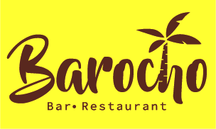
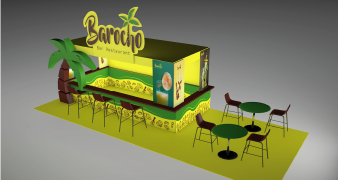
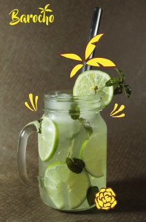
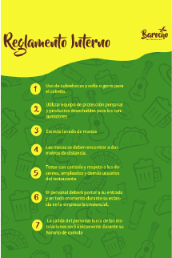
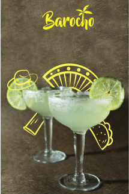

Proyecto 1
Barocho es un bar-restaurant ubicado en el municipio de Tezonapa, Veracruz. Su fuerte es la venta de bebidas alcohólicas, pero también destaca por la venta de alimentos. se creo un manual de identidad visual corporativa, cuyo objetivo es establecer una nueva identidad corporativa para la empresa, definiendo los elementos primarios y secundarios de la marca. .


Stand para feria o festivales haciendo alusiòn a un mini-bar incorporando la identidad visual de la marca como lo son patrones, colores corporativos y promocionales de las bebidas.


